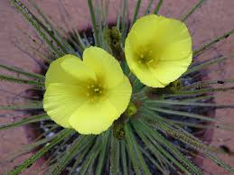

Drosophyllaceae
Dewy Pine Family
Drosophyllaceae is a monotypic family of carnivorous flowering plants, containing only Drosophyllum lusitanicum, the Dewy Pine. This unique subshrub is endemic to arid regions of the western Mediterranean (Portugal, Spain, Morocco). It captures insects using linear leaves covered in non-moving, stalked sticky glands (a type of flypaper trap) and bears relatively large, yellow, 5-parted flowers. The family belongs to the order Caryophyllales and is part of its carnivorous clade.
Overview
The Drosophyllaceae family consists of a single species, Drosophyllum lusitanicum, commonly known as the Dewy Pine or Portuguese Sundew. It is native to nutrient-poor, dry, rocky or sandy soils in coastal regions of southwestern Spain, Portugal, and northern Morocco. Unlike most other members of the carnivorous Caryophyllales clade (like Droseraceae and Nepenthaceae) which typically inhabit wet environments, Drosophyllum is adapted to a dry Mediterranean climate.
This plant is a perennial subshrub with a woody base. Its most distinctive feature is its numerous long, linear leaves densely covered with stalked mucilaginous glands that trap insects, functioning as a passive flypaper trap (the glands do not move like those of Drosera). It also possesses sessile digestive glands. The plant emits a honey-like fragrance that may attract insects. It produces relatively large, bright yellow, 5-parted flowers in a terminal cluster. Phylogenetically, Drosophyllaceae is closely related to other carnivorous families within the Caryophyllales, such as Nepenthaceae and Droseraceae.
Drosophyllum lusitanicum is sometimes cultivated by carnivorous plant enthusiasts, valued for its unique appearance and adaptation to drier conditions compared to many other carnivorous plants.
Quick Facts
- Scientific Name: Drosophyllaceae Chrtek, Slavíková & Studnička
- Common Name: Dewy Pine Family
- Number of Genera: 1 (Drosophyllum)
- Number of Species: 1 (Drosophyllum lusitanicum)
- Distribution: Western Mediterranean (SW Spain, Portugal, N Morocco).
- Evolutionary Group: Angiosperms - Eudicots - Core Eudicots - Caryophyllales
- Habit: Carnivorous subshrub.
Key Characteristics
Growth Form and Habit
Plants are perennial subshrubs with a distinct woody base and herbaceous upper stems, often growing upright and sparsely branched, typically reaching 30-60 cm in height (sometimes taller).
Leaves
Leaves are arranged alternately and are crowded along the stem, especially towards the base. They are linear, long (up to 20-30 cm), narrow, and taper to a point, resembling pine needles superficially (hence "Dewy Pine"). The leaves are covered on all surfaces with two types of glands: numerous stalked glands that secrete sticky mucilage droplets (trapping glands), and smaller sessile glands that secrete digestive enzymes. Unlike Drosera, these glands and the leaves themselves do not exhibit movement in response to captured prey. Young leaves show circinate vernation (coiled). Stipules are absent. The plant often has a noticeable sweet, honey-like scent.
Inflorescence
Flowers are borne in a terminal, few- to many-flowered, often lax cyme or panicle-like inflorescence.
Flowers
Flowers are relatively large (2-4 cm across), showy, bisexual, and radially symmetrical (actinomorphic). They are typically 5-merous.
- Calyx: Consists of 5 sepals, free or slightly fused at the base, often glandular, persistent in fruit.
- Corolla: Consists of 5 free petals, relatively large, bright yellow, broadly obovate (wedge-shaped).
- Androecium: Contains 10-20 stamens (often 10 in two whorls of 5). Filaments are free. Anthers have two pollen sacs and open via longitudinal slits.
- Gynoecium: Features a superior ovary composed of 5 fused carpels, forming a single chamber (unilocular). Placentation is free-central or basal. Ovules are numerous. A single short style is present, topped by 5 radiating, often club-shaped or fringed stigmas.
Fruits and Seeds
The fruit is a loculicidal capsule, typically ovoid or pear-shaped, opening by 5 valves from the apex downwards. It contains numerous, small, black, pear-shaped seeds with rough surfaces. Endosperm is present.
Chemical Characteristics
Plants produce digestive enzymes (proteases, phosphatases) from sessile glands. Mucilage is secreted by stalked glands. Naphthoquinones like plumbagin are present, contributing to pigmentation. The characteristic scent is also notable.
Field Identification
Identifying Drosophyllaceae (Drosophyllum lusitanicum) relies on its carnivorous nature, unique leaf structure, flower color, and restricted habitat/distribution:
Primary Identification Features
- Carnivorous subshrub habit: Woody base with upright herbaceous stems.
- Long, linear leaves covered in sticky droplets: Leaves resemble pine needles covered in dew, but the glands are stalked and do not move.
- Large, bright yellow, 5-parted flowers: Relatively showy flowers borne in terminal clusters.
- Superior ovary / 5-valved capsule fruit: Ovary sits above petal/sepal attachment; fruit is a capsule splitting into 5 sections.
- Habitat and Distribution: Found only in dry, nutrient-poor, rocky or sandy habitats in SW Spain, Portugal, and N Morocco.
Secondary Identification Features
- Distinct honey-like scent.
- Circinate vernation of young leaves.
- Stamens 10-20.
- 5 distinct stigmas.
Seasonal Identification Tips
The plant is generally visible year-round:
- Year-round: Subshrub habit and glandular linear leaves are present and diagnostic.
- Flowering Season (Typically spring/early summer): Large yellow flowers are conspicuous.
- Fruiting Season: Look for the developing or mature 5-valved capsules.
Common Confusion Points
Distinguishing Drosophyllum from other sticky-leaved carnivorous or similar-looking plants:
- Drosera (Sundews): Also have stalked sticky glands (tentacles), but these (and often the leaves) typically move in response to prey. Most Drosera are rosette herbs (not subshrubs), and flowers are usually smaller, often white or pink, with typically only 5 stamens and 3 styles/stigmas.
- Byblis (Rainbow Plants): Australian family (Byblidaceae, order Lamiales) with similar linear leaves covered in sticky glands, but glands differ structurally, flowers are bilaterally symmetric (zygomorphic) with a distinctive stamen arrangement.
- Pinguicula (Butterworts): Also use sticky flypaper traps, but glands are sessile (flat on the leaf surface), leaves are usually broader and form basal rosettes, and flowers are strongly bilateral with a spur (Lentibulariaceae, order Lamiales).
- Focus on the combination: Subshrub + Linear Leaves with Non-Moving Stalked Sticky Glands + Large Yellow Radial 5-parted Flowers + 10-20 Stamens + 5 Stigmas + SW Mediterranean Habitat = Drosophyllaceae.
Field Guide Quick Reference
Look For:
- Carnivorous subshrub (SW Mediterranean)
- Leaves: Alternate, Linear, long
- Covered in non-moving sticky glands (dewy look)
- Distinct honey-like scent
- Flowers: Large, Yellow, 5-parted, radial
- Petals free
- Stamens: 10-20
- Ovary: Superior, 5 carpels, unilocular
- Styles/Stigmas: 5
- Fruit: Capsule (5-valved)
Key Variations:
- (Monotypic family - little variation)
- Plant size can vary with conditions
Notable Examples
The family contains only a single species:

Drosophyllum lusitanicum
Dewy Pine / Portuguese Sundew
The sole species in the family, this carnivorous subshrub is endemic to dry, nutrient-poor habitats in SW Spain, Portugal, and N Morocco. It is recognized by its upright habit, long linear leaves covered in non-moving sticky glands giving a dewy appearance, and relatively large, bright yellow flowers.
Phylogeny and Classification
Drosophyllaceae belongs to the order Caryophyllales within the core eudicots. Like its close relatives Droseraceae and Nepenthaceae, it is part of the well-supported "carnivorous clade" within this order.
Molecular phylogenetic studies place Drosophyllaceae firmly within this carnivorous group. Its exact position varies slightly between studies, but it is often found to be sister to Nepenthaceae (Old World Pitcher Plants) or sister to a clade containing Nepenthaceae and Droseraceae. This highlights a shared ancestry for these diverse carnivorous lineages within Caryophyllales, likely involving precursors with specialized glandular structures.
Position in Plant Phylogeny
- Kingdom: Plantae
- Clade: Angiosperms (Flowering plants)
- Clade: Eudicots
- Clade: Core Eudicots
- Order: Caryophyllales
- Family: Drosophyllaceae
Evolutionary Significance
Drosophyllaceae, although monotypic, is evolutionarily significant:
- Carnivorous Adaptation in Arid Environment: Unlike most related carnivorous plants which favor wet habitats, Drosophyllum is adapted to dry Mediterranean conditions, showcasing a unique ecological niche for carnivory.
- Flypaper Trap Evolution: Represents a distinct type of passive flypaper trap within the Caryophyllales carnivorous clade, differing in gland movement from Drosera and trap structure from Byblis or Pinguicula.
- Phylogenetic Link: Its position helps clarify relationships among the core carnivorous families (Droseraceae, Nepenthaceae) and their connection to non-carnivorous relatives like Ancistrocladaceae and Dioncophyllaceae.
- Biogeography: Its restricted Western Mediterranean distribution contrasts with the ranges of its relatives, providing data points for understanding the historical biogeography of the Caryophyllales.